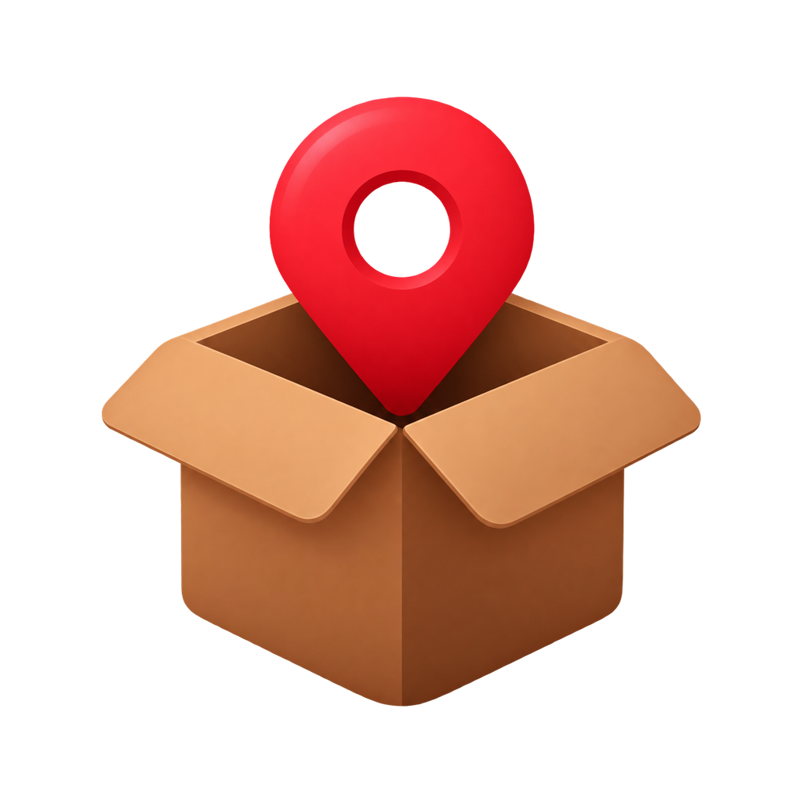
CatalocPhotograph a shelf. Name what is on it. Put a crate on that shelf and a box in the crate, as deep as reality goes. When you need the tent, search finds it and gives you the whole path — Garage → Steel shelving → Crate 1 — so you know where to walk.
iPhone, iPad and Android. Free for one household and 200 things.
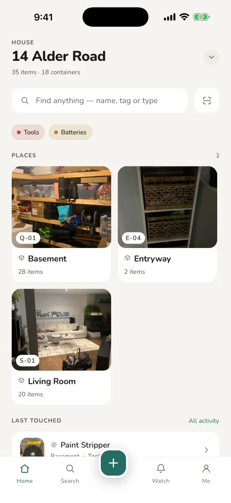
Your home at a glance. Every room as a photo, every place with a code you can write on it.
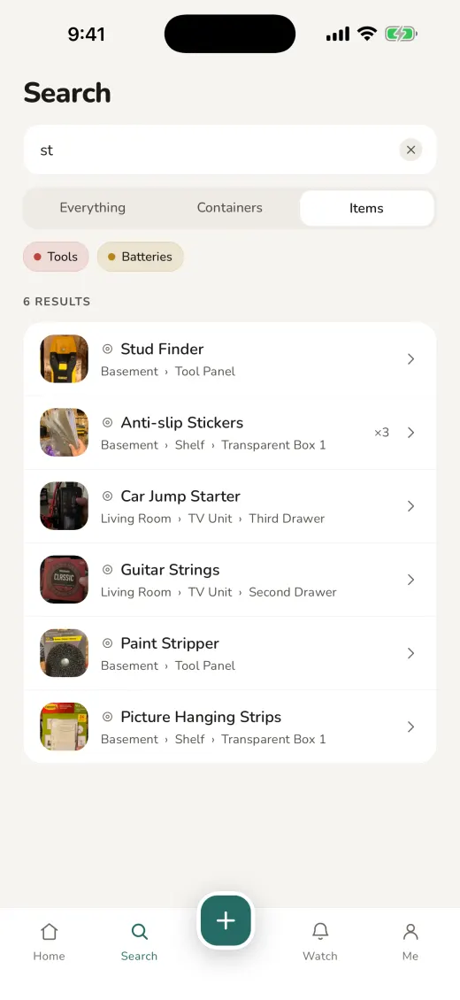
Type three letters and you get where it is, not just that it exists.
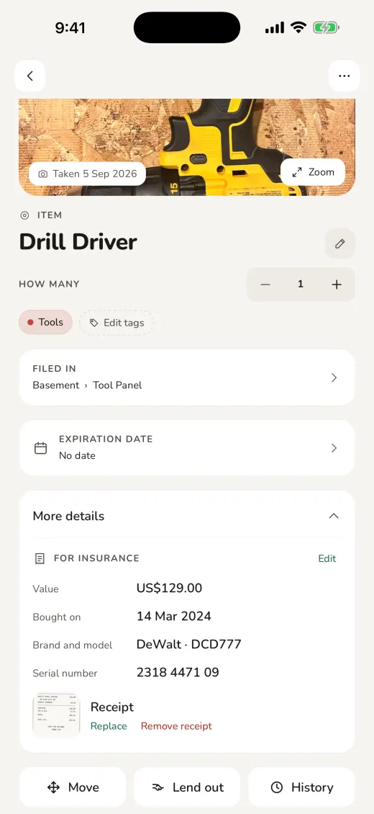
Every thing has its own page: a photo, a count, tags, a place, and the value, receipt and serial a claim asks for.
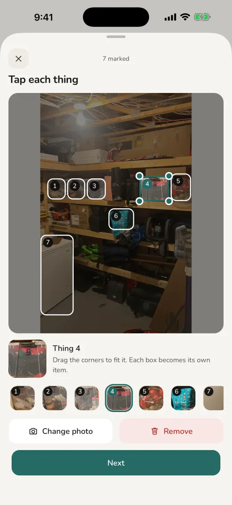
A shelf in one photo. Tap each thing on it, and every box becomes its own entry with its own crop.
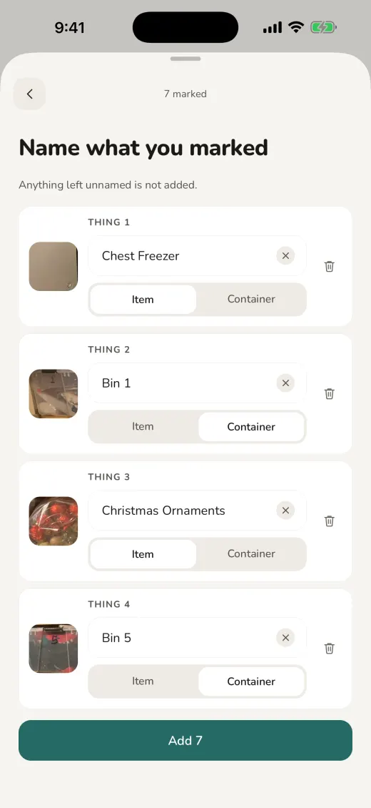
Bins and the things beside them, from one picture. No AI guessing: you draw, you name.
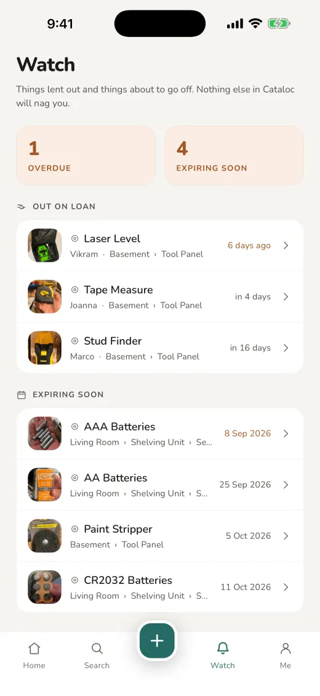
One tab for what's lent out and what's about to go off.
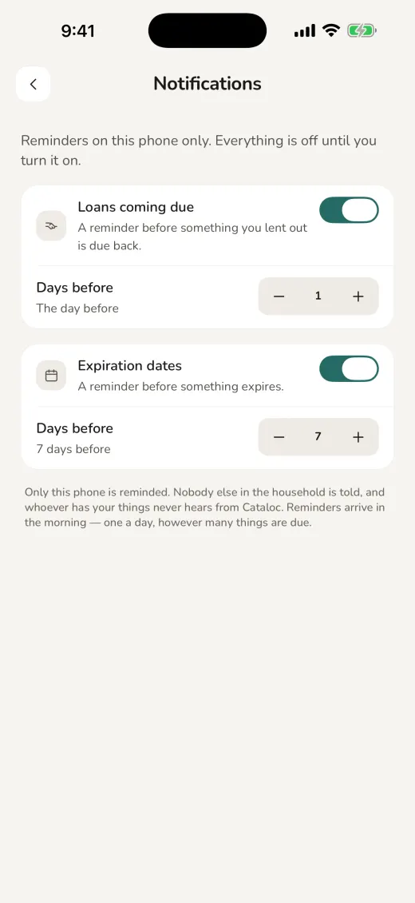
A nudge the day before the drill is due back, or a week before the batteries expire. Off unless you want it.
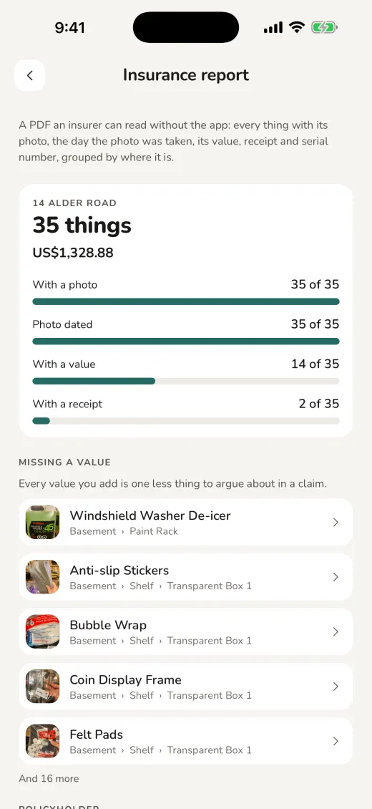
See how ready you are before you need to be: what's photographed, dated and priced, and what isn't yet.
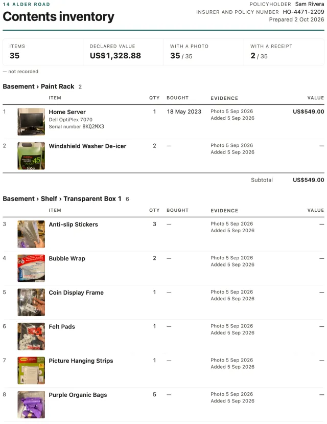
One PDF an insurer can read without the app. Print it, email it, keep it with your policy.
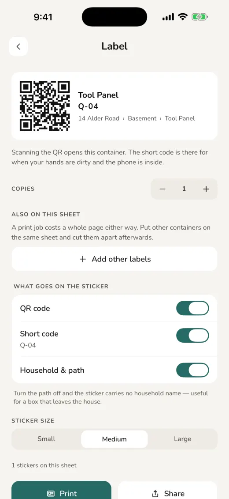
Print a sticker. Scan it to open the box, or type the code if the camera can't.
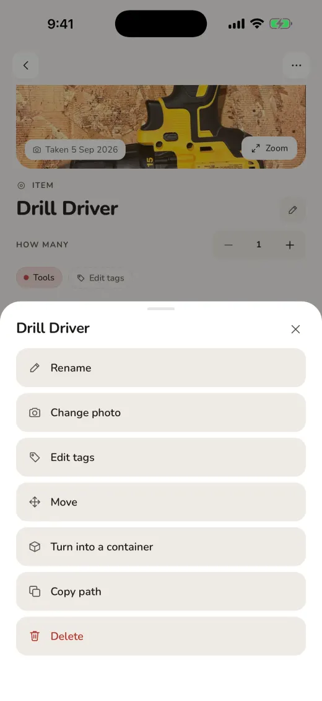
Turned out the toolbox holds things? Make it a container. Photo, tags, history and label all stay.
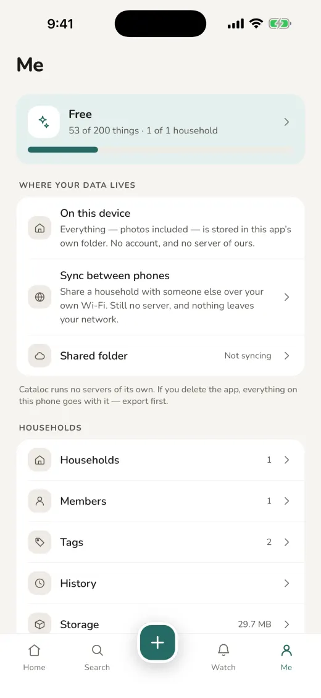
No account. Everything is on this phone.
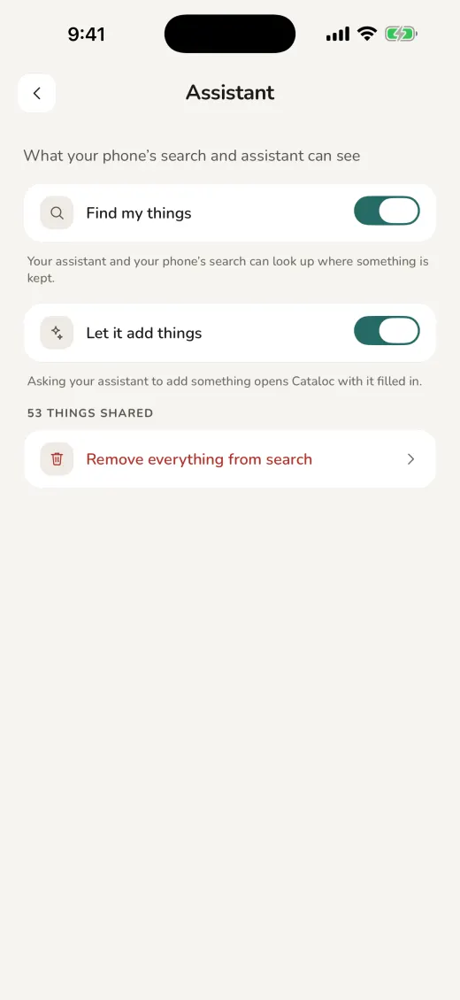
Ask Siri or Spotlight. Off until you say yes.
Photograph the boxes as you pack them. Months later, search finds anything in seconds — including the eleven boxes you never unpacked.
A loft, a basement, a rented storage unit. Nest containers to any depth, and the breadcrumb tells you the full address of everything.
A pantry you can actually read, and expiration dates on one screen instead of a surprise at the back of a cupboard — with a reminder a week before, if you want one.
Mark what went where and to whom. One tab shows what is out and what is overdue — and, if you switch reminders on, a note the day before it's due back. Nothing else in the app nags you.
Each home is its own catalogue, with its own search and history. Nothing bleeds between them.
For insurance, before you need to know. Value, purchase date, brand, model, serial number and a receipt photo on every thing, then one PDF an insurer can read without the app, grouped by room with subtotals.
Containers inside containers, to any depth. The breadcrumb scrolls rather than truncating, so the whole address stays readable and every step is tappable.
Every box and every thing leads with its own picture, with pinch-to-zoom. Recognising a box by sight beats reading its name.
Photograph a whole shelf, tap or drag a box around each thing and name them. Each box can be an item or a container, so one picture can create the bins and what sits beside them. Every one is saved with its own crop, so five new things look like five things. Free.
Switch it on and Spotlight finds the drill without opening the app; ask Siri or your Android assistant where it is and you are told the shelf. Free, off until you ask for it, and nothing is uploaded.
QR code, short code and name on one sticker; scanning the QR opens that container. Each element switches off, so a box that leaves the house need not carry your address.
Send a shelf or a tag to a friend as a single web page, photos and all. It opens in any browser — no app, no account — and each thing can carry an “ask to borrow” button.
Pair two phones directly over your own Wi-Fi with a QR and a single-use code, or point every phone at a shared folder of your own. No account, and no Cataloc server, either way.
A coverage check shows what is photographed, dated, priced and backed by a receipt, and lists what isn't yet. Then one PDF — every thing with its photo, value and serial, grouped by room with subtotals — goes to the print or share sheet. Built on the phone; nothing is uploaded.
The day before a loan is due back, or a week before something expires — each lead adjustable, once a day at most. Off until you switch it on, scheduled on this phone only, and whoever has your things never hears from Cataloc.
Turned out the toolbox holds things? Make it a container. Its photo, tags, history and label all stay. A container that is empty can become an item again.
Add the widget and search is a tap away, without hunting for the app first.
Choose a password and every export is encrypted on your phone before it is written, with the same encryption as the sync folder lock. Nobody can recover the password, so keep it.
Me → Storage shows what photos and history take up, re-encodes pictures smaller, clears photos nothing uses and trims old history — telling you exactly what it will free first.
English, Português, Español, Français, Italiano, Русский, العربية, 日本語, 한국어 and 简体中文. Your own item names are never translated.
No account. No sign-up. No Cataloc server. No analytics, no advertising, no third-party SDK reporting on you. Your catalogue and your photos are files in the app's own storage. Export all of it, or erase all of it, in one tap — and exports can be password-protected.
Anything that leaves your phone leaves because you set it up: pairing with another phone on your Wi-Fi, or a shared folder you choose and control. Nothing of yours passes through the developer, ever.
One household and 200 containers and items are free, forever. So are marking a whole shelf, the insurance report, reminders and your phone's own search. PRO lifts both ceilings, and every feature added later is included.